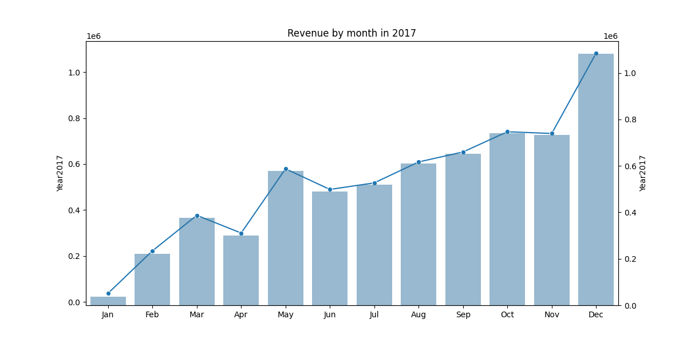
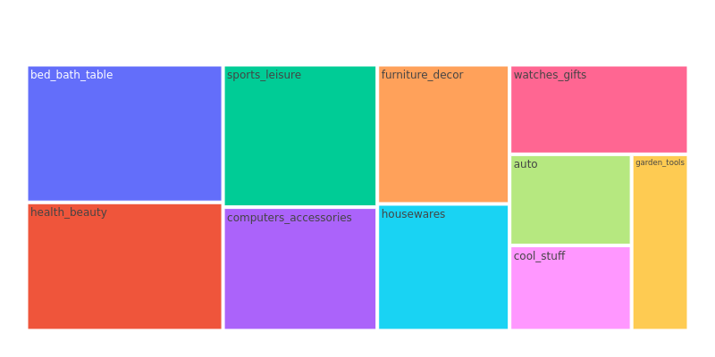
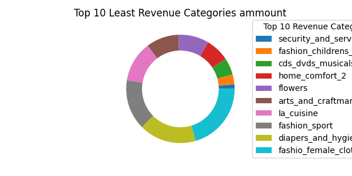
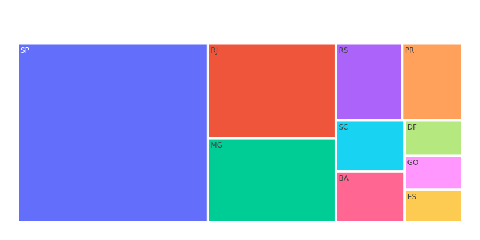
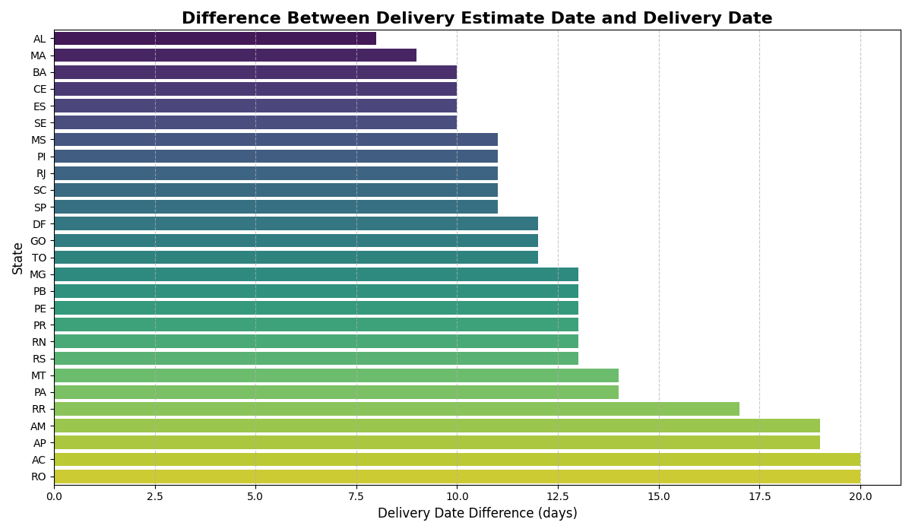
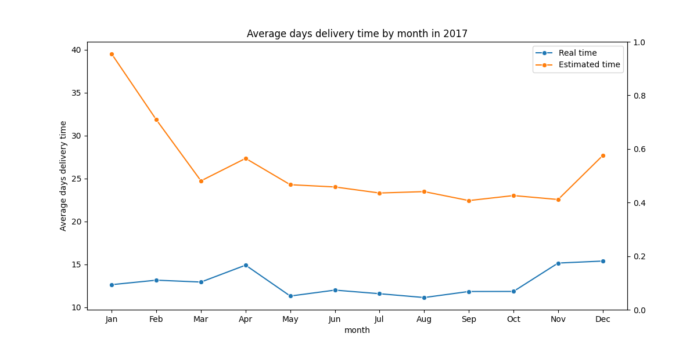
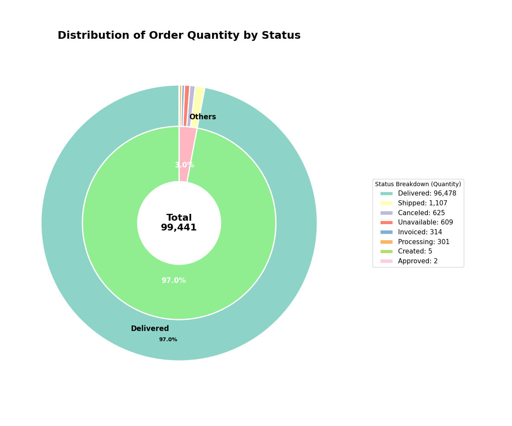
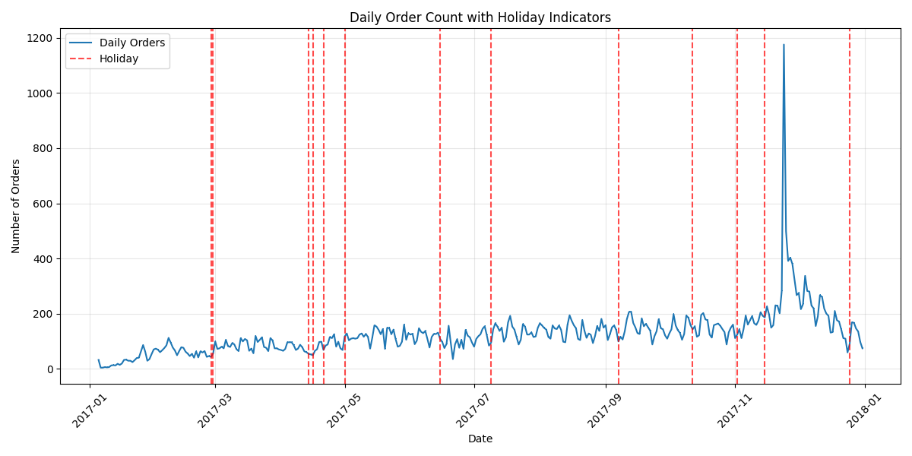
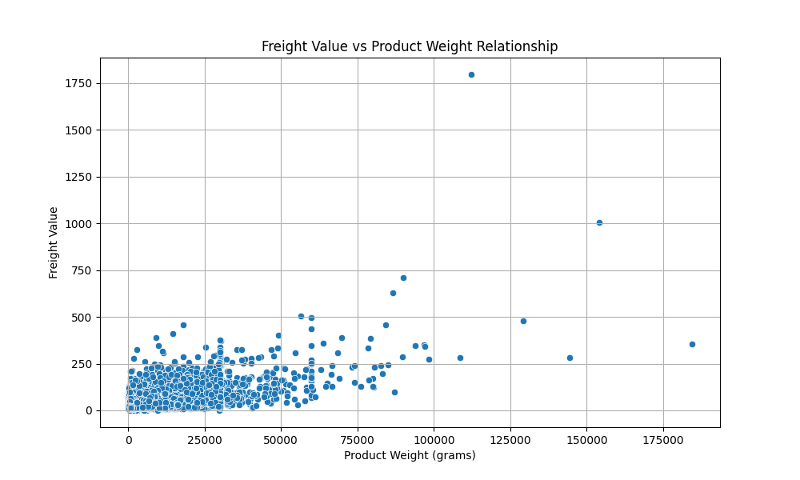

ELT Brazil E-Commerce Analysis
This report presents an analysis of the Brazilian e-commerce dataset, including various visualizations of revenue, delivery, and order data.
Revenue by Month and Year (2017)

Analysis: This plot shows the revenue trend for the year 2017. There is a noticeable upward trend in revenue throughout the year, with a significant peak in November, likely due to Black Friday sales. The months of December also show a strong performance, which can be attributed to the holiday season.
Top 10 Revenue Categories

Analysis: This treemap highlights the top 10 revenue-generating product categories. "Bed Bath Table" and "Health Beauty" are the leading categories, indicating a strong market for home goods and personal care products.
Top 10 Revenue Categories (Amount)

Analysis: This pie chart provides a different view of the top 10 revenue categories, showing their proportional contribution to the total revenue. It reinforces the dominance of the "Bed Bath Table" and "Health Beauty" categories.
Top 10 Least Revenue Categories

Analysis: This chart shows the 10 categories with the lowest revenue. Categories like "Security and Services" and "Fashion Childrens Clothes" have very low sales, suggesting they are either niche markets or have not been effectively promoted.
Revenue per State

Analysis: This treemap illustrates the revenue distribution across different states in Brazil. São Paulo (SP) is by far the largest market, followed by Rio de Janeiro (RJ) and Minas Gerais (MG). This concentration of sales in the southeastern states is a key characteristic of the Brazilian e-commerce market.
Delivery Date Difference

Analysis: This bar plot shows the average difference between the estimated delivery date and the actual delivery date for each state. Most states have a positive difference, meaning that deliveries are generally made earlier than estimated. However, some states in the North and Northeast, like AC and RO, have a larger difference, which could be due to logistical challenges in these regions.
Real vs. Predicted Delivery Time (2017)

Analysis: This line plot compares the real and estimated delivery times throughout 2017. The estimated delivery time is consistently higher than the real delivery time, which is a positive indicator of the company's logistics performance. The gap between the two lines narrows towards the end of the year, which might be due to increased demand during the holiday season.
Global Amount Order Status

Analysis: This donut chart provides a snapshot of the order statuses. The vast majority of orders are "Delivered," which is a good sign. The other statuses, such as "Shipped," "Canceled," and "Processing," represent a small fraction of the total orders.
Orders per Day and Holidays (2017)

Analysis: This plot shows the daily order volume in 2017, with public holidays marked. There doesn't appear to be a strong, consistent correlation between holidays and a decrease in orders. In some cases, there are even spikes in orders around holidays, which could be due to promotional campaigns.
Freight Value vs. Weight Relationship

Analysis: This scatter plot explores the relationship between freight value and product weight. As expected, there is a positive correlation: as the weight of the product increases, the freight value also tends to increase. However, there is a significant amount of variance, which could be due to other factors like distance, product category, and shipping method.
Power BI Visualization Proposal
Interactive Sales and Delivery Dashboard
Description: To complement the static plots in this report, an interactive Power BI dashboard could be created. This dashboard would provide a dynamic and more granular view of the sales and delivery data. Key features would include:
- Sales Performance Dashboard: An interactive map of Brazil showing sales by state, with the ability to drill down to the city level. Slicers for date, product category, and payment method would allow for a detailed analysis of sales trends.
- Delivery Logistics Analysis: A dashboard focused on delivery performance, with KPIs for average delivery time, on-time delivery rate, and freight costs. Users could filter by state, city, and shipping carrier to identify bottlenecks and opportunities for improvement.
- Customer Analysis: A view of customer demographics, purchase history, and review scores. This would help in understanding customer behavior and identifying the most valuable customer segments.
Benefits:
- Interactivity: Users could explore the data themselves, leading to deeper insights.
- Real-time Data: The dashboard could be connected to a live database for up-to-date information.
- Data-driven Decisions: The insights from the dashboard would enable better decision-making in areas like marketing, logistics, and customer service.